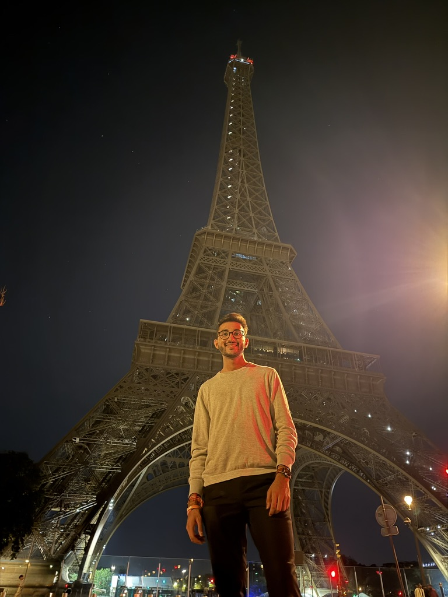

CURIOUS BY DEFAULT.PORTFOLIO / 2026
Hey, I’m
Neel.
a student.|
A little curiosity. A lot of purpose.
I build things, bring people together, and keep learning along the way.
IDEAS INTO IMPACTWORK IN PROGRESS. ALWAYS.+
↗ Always becoming.
STAY CURIOUS ✳ BUILD WITH PURPOSE ✳ SHOW UP FOR OTHERS ✳ KEEP EXPLORING ✳ STAY CURIOUS ✳ BUILD WITH PURPOSE ✳
01 / THE PERSONA FEW THINGS ABOUT ME

More than a single title. ↗Many interests.
One curious mind.
I’m a Computer Engineering Technology student at Purdue who feels most at home where technology meets people. At CME Group, I build tools that help developers find the context they need. At Aidra, I work on AI and augmented reality that help people respond in critical moments.
From my work as a Founding Engineer at Aidra to volunteering with BAPS and Project RISHI, I’m drawn to work that makes someone’s day—or their world—a little better.
↗ Builder at heart✳ Community first∞ Lifelong learner
02 / SELECTED WORKLESS TALK. MORE MAKING.
AIDRA / CONCEPT+
Guidance when it matters.
AI + AUGMENTED REALITY↗
01 / FOUNDING ENGINEERAI · AR · MOBILE
Aidra
Turning bystanders into first responders with real-time AI and augmented reality guidance. On-device computer vision runs at 60 FPS, with guidance activated in under 15 seconds and roughly 3× faster critical action in internal drills.
✳ Cal Hacks 12.0 Social Impact Award
FIND YOUR NATURE / CONCEPTGo find
your outside.
A LITTLE CLOSER TO NATURE↗
02 / WEB APPLICATIONJAVASCRIPT · FIREBASE
Find Your Nature
A place to explore national parks, discover your next trip, and share reviews. Built with NPS and Google Maps APIs.
↗ Made for the explorer in all of us
03 / THE JOURNEYLEARNING BY DOING
A few stops
along the way.
Different teams, new perspectives,
and something to learn at every step.
01
CME Group
Software Engineer Intern
Chicago, IL · May 2026 – Present
Built enterprise metadata integrations for Google Cloud Workstations and VS Code, making schema parsing and context discovery easier across core services.
Engineered custom Model Context Protocol (MCP) servers and REST middleware across 50+ microservices, reducing manual API lookup time by 40%. A distributed context-provider pipeline cut cross-team architectural discovery overhead by 50%.
Led the launch pipeline for custom IDE plugins, from compatibility analysis to distribution and developer onboarding.
02
Aidra
Founding Engineer
San Francisco, CA · Oct 2025 – Present
Built an AI + AR first-response platform and a full-stack computer vision pipeline using CoreML, TensorFlow Lite, and spatial anchoring, maintaining 60 FPS rendering.
Brought CPR guidance to AR glasses with OpenXR and phone co-processing: under 100 ms glass-to-glass latency, stable 6-DoF overlays, and hands-free controls. Pilot users reported 73% higher preference over handheld guidance.
Earned the Cal Hacks 12.0 Social Impact Award and launched a public demo and source to grow early pilot participation.
03
MiraPhoto
Software Engineer Intern
New York City, NY · Jul – Sep 2025
Delivered booking and review flows with React Native, Expo, and 25 reusable TypeScript components. RTK Query and lazy-loaded images helped bring first paint to 1.1 seconds and onboard 3,000 users in the first month.
Introduced GitHub Actions CI/CD and 130 Jest tests with 87% coverage, halving production bugs and enabling same-day hotfixes.
04
Project RISHI
Events Co-Chair
West Lafayette, IN · Aug 2024 – PresentBringing students together around sustainable health and social impact initiatives.
05
BAPS
National Development IT Member
Robbinsville, NJ · Jun 2022 – Present
Led front-end development and volunteered across IT to build apps and websites serving national and regional communities.
Used Jenkins and DevOps tooling to deploy front-end and back-end services while coordinating a nationwide volunteer developer community.
04 / ALWAYS LEARNINGTHE FOUNDATION & THE TOOLKIT
BOILERMAKER, THROUGH & THROUGH.
Purdue University↗
B.S. Computer Engineering Technology
Pursuing minors in Computer Science & Computer Information Technology
RELEVANT COURSEWORKData Structures & Algorithms · C Programming · Embedded Cross-Platform Interface and Communication · DAQ and Systems Control · Advanced Digital Systems · Digital Signal Processing · Wireless Communications
AUG 2023 — DEC 2027 (EXPECTED)WEST LAFAYETTE, IN